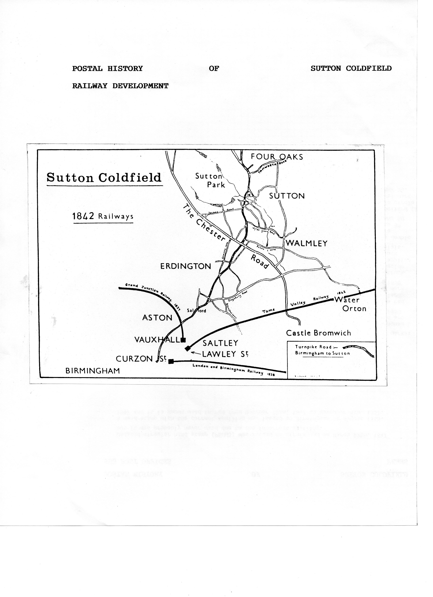

Displays
Display by member or others to show how diverse Philately can be and to encourage new philatelists to try.
Display title
Aerophilately 1932
Presented by
Brian
Sutton Coldfield's Postal History

Display by member or others to show how diverse Philately can be and to encourage new philatelists to try.
Aerophilately 1932
Brian
